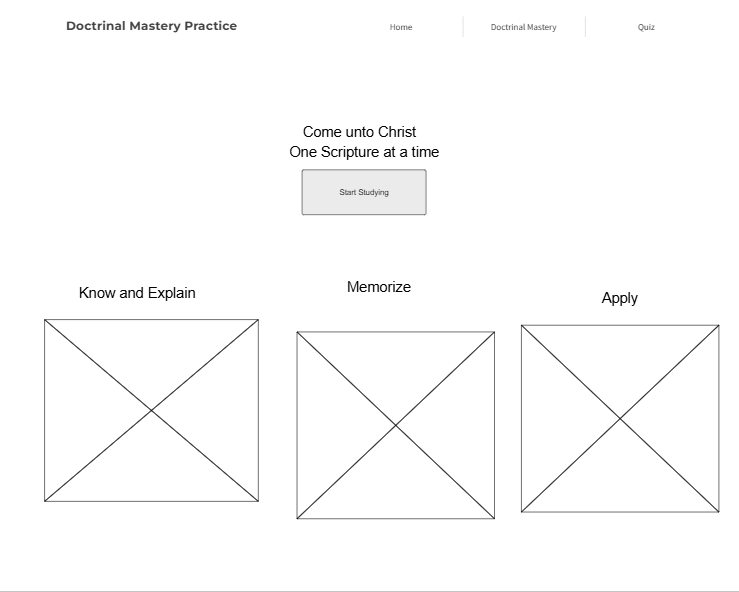
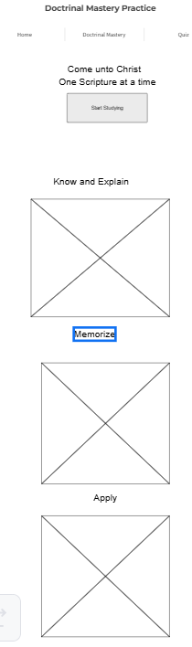

Doctrinal Masters
Site Name
Doctrinal Masters
Because users will become masters of the doctrine
doctrinalmasters.comSite Purpose
This site will serve the purpose of helping my seminary students and others master the doctirnal mastery passages for the lds seminary program. It also will give resources to help study, memorize, and understand the importance of scriptures.
Scenarios
- What are the doctirnal mastery passages?
- How can I memorize them?
Color Scheme
(see document)
Purple will be used as a main background color to denote wisdom in scripture and understanding doctrine.
Blue will be used as a color for sections, divs, etc. It gives a welcoming and trusting vibe to the page.
The document background will be parchment colored because, you know... parchment.
Typography
"Caudex", serif; this gives the webpage a medievel/ scripture look. On headings the bold version will be used.
Wireframes

